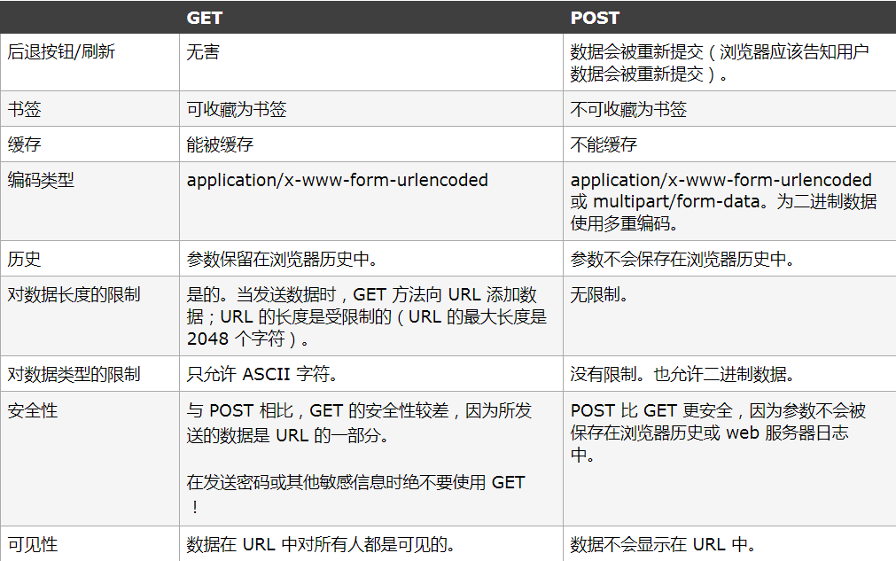
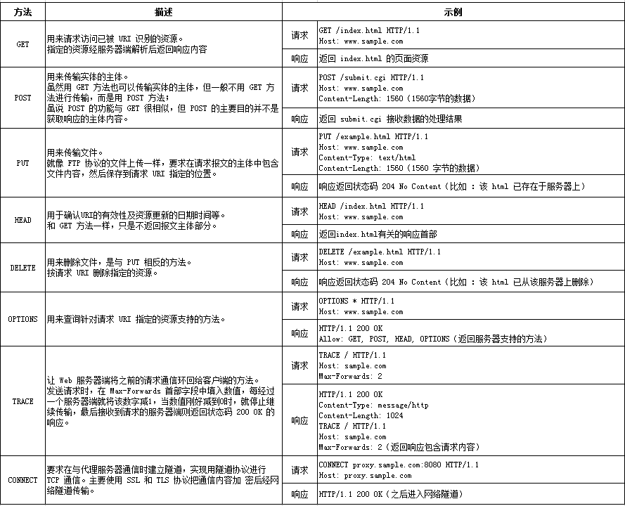
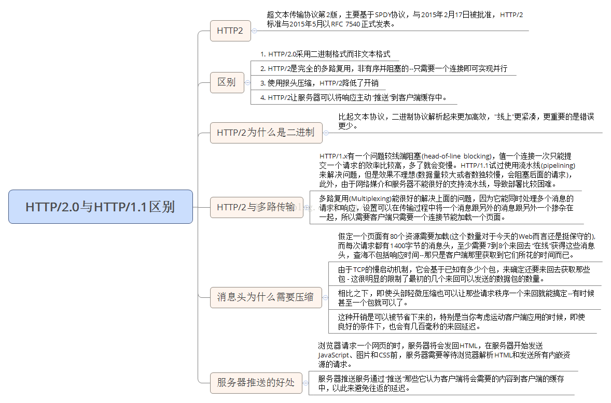

HTTP（HyperText Transfer Protocol)超文本传输协议是互联网上应用最为广泛的一种网络协议。由于信息是明文传输，所以被认为是不安全的。
为了理解HTTP，我们有必要事先了解一下TCP/IP协议族。其是互联网相关联的协议集合的总称，通常使用的网络就是在TCP/IP协议族的基础上运作的，而HTTP属于它内部的一个子集，除此之外，还包括大家所熟知的FTP，DNS，TCP，UDP，IP等等协议。
OSI的七层协议

其核心思想就是把数据信息包装起来，即封装：发送端在层与层之间传输数据时，每经过一层时必定会被打上一个该层所属的首部信息。反之，接收端在层与层传输数据时，每经过一层时会把对应的首部消去。值得一提的是，层次化之后，设计也变得相对简单了。处于应用层上的应用可以只考虑分派给自己的任务，而不需要弄清对方在地球上哪个地方、对方的传输线路是怎样的、是否能确保传输送达等问题。
TPC/IP协议是传输层协议，主要解决数据如何在网络中传输，而HTTP是应用层协议，主要解决如何包装数据。WEB使用HTTP协议作应用层协议，以封装HTTP 文本信息，然后使用TCP/IP做传输层协议将它发到网络上。
下面的图表试图显示不同的TCP/IP和其他的协议在最初OSI（Open System Interconnect）模型中的位置：
HTTP 方法
下面的表格比较了两种 HTTP 方法：GET 和 POST

HTTP 请求方法

持久连接
HTTP 协议的初始版本中，每进行一个 HTTP 通信都要断开一次 TCP 连接。比如使用浏览器浏览一个包含多张图片的 HTML 页面时，在发送请求访问 HTML 页面资源的同时，也会请求该 HTML 页面里包含的其他资源。因此，每次的请求都会造成无畏的 TCP 连接建立和断开，增加通信量的开销。
为了解决上述 TCP 连接的问题，HTTP/1.1 和部分 HTTP/1.0 想出了持久连接的方法。其特点是，只要任意一端没有明确提出断开连接，则保持 TCP 连接状态。旨在建立一次 TCP 连接后进行多次请求和响应的交互。在 HTTP/1.1 中，所有的连接默认都是持久连接。
管线化
持久连接使得多数请求以管线化方式发送成为可能。以前发送请求后需等待并接收到响应，才能发送下一个请求。管线化技术出现后，不用等待亦可发送下一个请求。这样就能做到同时并行发送多个请求，而不需要一个接一个地等待响应了。
比如，当请求一个包含多张图片的 HTML 页面时，与挨个连接相比，用持久连接可以让请求更快结束。而管线化技术要比持久连接速度更快。请求数越多，时间差就越明显。
Cookie
HTTP 是一种无状态协议。协议自身不对请求和响应之间的通信状态进行保存。也就是说在 HTTP 这个级别，协议对于发送过的请求或响应都不做持久化处理。这是为了更快地处理大量事务，确保协议的可伸缩性，而特意把 HTTP 协议设计成如此简单的。
可是随着 Web 的不断发展，我们的很多业务都需要对通信状态进行保存。于是我们引入了 Cookie 技术。有了 Cookie 再用 HTTP 协议通信，就可以管理状态了。
Cookie 技术通过在请求和响应报文中写入 Cookie 信息来控制客户端的状态。Cookie 会根据从服务器端发送的响应报文内的一个叫做 Set-Cookie 的首部字段信息，通知客户端保存Cookie。当下次客户端再往该服务器发送请求时，客户端会自动在请求报文中加入 Cookie 值后发送出去。服务器端发现客户端发送过来的 Cookie 后，会去检查究竟是从哪一个客户端发来的连接请求，然后对比服务器上的记录，最后得到之前的状态信息。
Cookie是服务器保存在浏览器的一小段文本信息，每个 Cookie 的大小一般不能超过4KB。浏览器每次向服务器发出请求，就会自动附上这段信息。
cookie的用途
会话管理
1.1 记录用户的登录状态是cookie最常用的用途。通常web服务器会在用户登录成功后下发一个签名来标记session的有效性，这样免去了用户多次认证和登录网站。
1.2 记录用户的访问状态，例如导航啊，用户的注册流程啊。个性化信息
2.1 Cookie也经常用来记忆用户相关的信息，以方便用户在使用和自己相关的站点服务。例如：ptlogin会记忆上一次登录的用户的QQ号码，这样在下次登录的时候会默认填写好这个QQ号码。
2.2 Cookie也被用来记忆用户自定义的一些功能。用户在设置自定义特征的时候，仅仅是保存在用户的浏览器中，在下一次访问的时候服务器会根据用户本地的cookie来表现用户的设置。例如google将搜索设置（使用语言、每页的条数，以及打开搜索结果的方式等等）保存在一个COOKIE里。记录用户的行为
最典型的是公司的TCSS系统。它使用Cookie来记录用户的点击流和某个产品或商业行为的操作率和流失率。当然功能可以通过IP或http header中的referrer实现，但是Cookie更精准一些。
WebView中的Cookie机制
WebView是基于webkit内核的UI控件，相当于一个浏览器客户端。它会在本地维护每次会话的cookie(保存在data/data/package_name/app_WebView/Cookies)
数据就保存在Cookies那个文件里，其实是个数据库，把后缀改成.db用数据库打开可以看到里面的表结构，主要有host_key, name, value, path等，host_key其实就是domain.
当WebView加载URL的时候,WebView会从本地读取该URL对应的cookie，并携带该cookie与服务器进行通信。WebView通过android.webkit.CookieManager类来维护cookie。CookieManager是 WebView的cookie管理类。
okhttp中的cookie
详见之前的文章：OKHttp深入理解
Cookie的缺陷
cookie会被附加在每个HTTP请求中，所以无形中增加了流量。
由于在HTTP请求中的cookie是明文传递的，所以安全性成问题。（除非用HTTPS)
Cookie的大小限制在4KB左右。对于复杂的存储需求来说是不够用的。
HTTP报文简介
HTTP 报文本身是由多行（用 CR+LF 作换行符）数据构成的字符串文本。HTTP 报文大致可分为报文首部和报文主体两部分。两者由最初出现的空行（CR+LF）来划分。通常，并不一定有报文主体。
请求报文结构

请求报文的首部内容由以下数据组成：
请求行 —— 包含用于请求的方法、请求 URI 和 HTTP 版本。
首部字段 —— 包含表示请求的各种条件和属性的各类首部。（通用首部、请求首部、实体首部以及RFC里未定义的首部如 Cookie 等）
请求报文的示例，如下：
响应报文结构

响应报文的首部内容由以下数据组成：
状态行 —— 包含表明响应结果的状态码、原因短语和 HTTP 版本。
首部字段 —— 包含表示请求的各种条件和属性的各类首部。（通用首部、响应首部、实体首部以及RFC里未定义的首部如 Cookie 等）
响应报文的示例，如下：
HTTP状态码
HTTP 状态码的职责是当客户端向服务端发送请求时，描述返回的请求结果。
状态码类型:
1XX：Informational(信息性状态码)，接收的请求正在处理
2XX：Success(成功状态码)，请求正常处理完毕
3XX：Redirection(重定向状态码)，需要进行附加操作以完成请求
4XX：Client Error(客户端错误状态码)，服务器无法处理请求
5XX：Server Error(服务器错误状态码)，服务器处理请求出错
TCP三次握手四次挥手
在TCP/IP协议中，TCP协议提供可靠的连接服务，采用三次握手建立一个连接。
如下图所示，SYN（synchronous）是TCP/IP建立连接时使用的握手信号、Sequence number（序列号）、Acknowledge number（确认号码），三个箭头指向就代表三次握手，完成三次握手，客户端与服务器开始传送数据。

第一次握手：客户端发送syn包(syn=j)到服务器，并进入SYN_SEND状态，等待服务器确认；
第二次握手：服务器收到syn包，必须确认客户的SYN（ack=j+1），同时自己也发送一个SYN包（syn=k），即SYN+ACK包，此时服务器进入SYN_RECV状态；
第三次握手：客户端收到服务器的SYN＋ACK包，向服务器发送确认包ACK(ack=k+1)，此包发送完毕，客户端和服务器进入ESTABLISHED状态，完成三次握手。
四次挥手:
第一次挥手:客户端A发送一个FIN.用来关闭客户A到服务器B的数据传送
第二次挥手:服务器B收到这个FIN. 它发回一个ACK，确认序号为收到的序号+1。和SYN一样，一个FIN将占用一个序号
第三次挥手:服务器B关闭与客户端A的连接，发送一个FIN给客户端A
第四次挥手:客户端A发回ACK报文确认，并将确认序号设置为序号加1
TCP和UDP的区别
我这里简单列举几个:
1、基于连接与无连接;UDP是无连接的，即发送数据之前不需要建立连接
2、TCP保证数据正确性，UDP可能丢包，TCP保证数据顺序，UDP不保证。也就是说，通过TCP连接传送的数据，无差错，不丢失，不重复，且按序到达;UDP尽最大努力交付 ，即不保证可靠交付Tcp通过校验和，重传控制，序号标识，滑动窗口、确认应答实现可靠传输。如丢包时的重发控制，还可以对次序乱掉的分包进行顺序控制。
3、UDP具有较好的实时性，工作效率比TCP高，适用于对高速传输和实时性有较高的通信或广播通信。
4、每一条TCP连接只能是点到点的;UDP支持一对一，一对多，多对一和多对多的交互通信。
5、TCP对系统资源要求较多，UDP对系统资源要求较少。
HTTP 2.0
目标是改善用户在Web时的速度体验。可以说HTTP 2.0是SPDY的升级版(其实也是基于SPDY设计的)。
